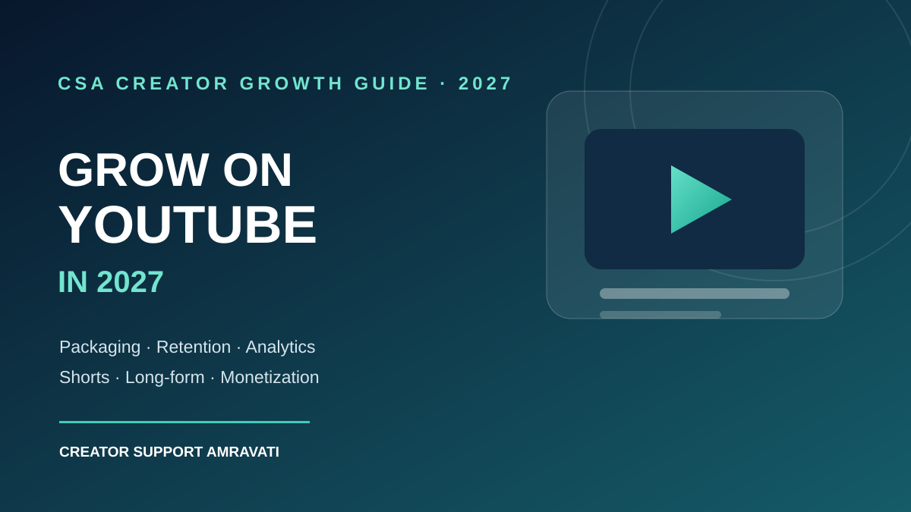
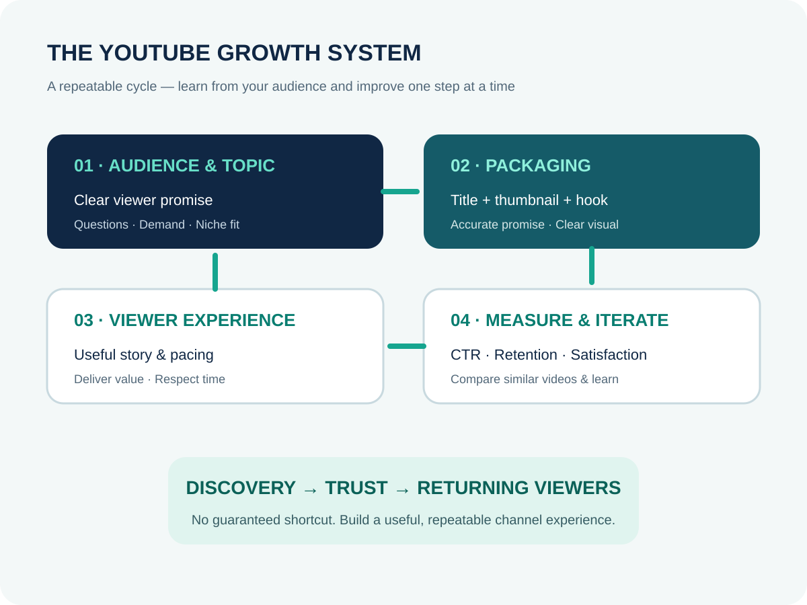

How to Grow on YouTube in 2027: The Complete Blueprint for Creators, Educators & Brands
YouTube growth is not a secret setting or a guaranteed upload formula. It comes from repeatedly helping a clearly defined audience discover, understand and enjoy useful videos. This guide connects the practical pieces—topic choice, packaging, viewer experience, Shorts, analytics and monetization—into one system you can improve over time.

- How YouTube discovery and recommendations work
- Niche positioning and a clear viewer promise
- Topic research, titles, thumbnails and opening hooks
- Retention-focused storytelling and production quality
- Shorts, long-form content and viewing journeys
- YouTube Studio analytics and monetization paths
1. How the YouTube Recommendation System Works
It is tempting to think of “the algorithm” as one score that decides whether a video succeeds. In reality, YouTube personalizes recommendations for each viewer. Its systems consider what a person watches, searches for, ignores or marks as not interested, along with how viewers respond when a video is shown.
YouTube describes three broad dimensions of content performance: appeal (whether people choose to watch), engagement (whether they continue watching) and satisfaction (whether the experience meets their expectations). Topic interest, competition and seasonality can also affect reach. A video with strong metrics may still receive fewer impressions if the topic has limited demand or competing videos are performing better.
- Home / Browse: A personalized surface where viewers discover videos based on their interests and viewing patterns.
- Suggested / Up next: Recommendations related to what a viewer is watching or may want to watch next.
- YouTube Search: Results matched to a viewer's query, relevance and other signals. Clear titles and useful answers help viewers understand the video.
Practical takeaway: Do not try to “please the algorithm” with tricks. Make a video that the intended viewer recognizes as relevant, that delivers what its title promises and that leaves the viewer satisfied.
2. Niche Positioning and the Viewer Promise
Before buying gear or designing a thumbnail, answer this: why would a new viewer want to watch another video from this channel? People subscribe when they expect future videos to offer value that matters to them.
The three-part channel positioning formula
- Specific audience: Who is the channel for? Examples include beginner video editors, competitive-exam learners, teachers, podcasters or local business owners.
- Core transformation: What recurring problem do you solve or what experience do you reliably deliver? Examples: clearer lessons, faster editing workflows or practical marketing guidance.
- Distinct delivery: What makes your explanation easier to follow—local examples, step-by-step demonstrations, honest comparisons, templates or expert interviews?
Turn these into a one-sentence viewer promise: “This channel helps [audience] achieve [useful outcome] through [distinct approach].” Keep the promise specific enough to guide topic selection but broad enough to support a series of videos.
3. Validate Topics Before You Record
Do not rely only on guesses or whatever is trending today. Look for evidence that your intended viewers have a question worth answering.
- Search suggestions: Type the core topic into YouTube Search and note relevant suggested queries. Treat these as research clues, not exact search-volume data.
- Audience questions: Review comments, community posts, customer questions and student doubts. Repeated confusion can become a useful video.
- Competitor gaps: Study recent videos in your niche, including smaller channels. Notice topics that attract discussion or views relative to the channel's usual performance, then ask what audience need the video served.
- Freshness and usefulness: Check whether information is current, especially for software, policies, exams, pricing and product comparisons.
Before scripting, write down the viewer's question, the one clear answer and the evidence or demonstration you will use. If you cannot explain the value in one or two sentences, refine the idea first.
4. Package the Idea: Title, Thumbnail and Opening Hook
Packaging is the promise that earns attention. Design it before filming so you can test whether the idea is understandable and visually communicable. Avoid a title-thumbnail combination that exaggerates what the video actually delivers.
Four practical packaging rules
- One clear focal point: Use a recognizable subject, object, result or contrast. Avoid filling every corner with text and stickers.
- Mobile-first readability: Keep thumbnail words short and large enough to read at small size. Two to four words can work, but clarity matters more than a fixed word count.
- Title and thumbnail should complement: Let the title explain the topic while the thumbnail adds a visual clue, result or question. Do not repeat the same sentence twice.
- Curiosity with accuracy: Create a reason to watch, but make sure the video answers the promise. Misleading packaging can disappoint viewers.
Write the first 15–30 seconds after the title and thumbnail are clear. Start by acknowledging the viewer's problem, showing the result or previewing the demonstration. Skip long logo animations and generic introductions when they delay the answer.
5. Retention: Deliver the Promise and Respect Attention
Audience retention is not about inserting a zoom or transition every fixed number of seconds. It is about making each section worth watching. Use structure and editing choices that support the topic instead of distracting from it.
| Video section | Viewer need | Practical execution |
|---|---|---|
| Opening | Confirm this is the right video | State the problem, outcome or demonstration immediately. |
| Context | Understand why it matters | Give a short roadmap and define any necessary terms. |
| Main sections | Learn and follow progress | Use clear chapters, examples, screen recordings or demonstrations. |
| Transitions | Know why the next point matters | Connect each section to the next logical question. |
| Ending | Know what to do next | Summarize the key action and recommend one genuinely related video. |
Cut repeated explanations, dead pauses and irrelevant detours, but do not remove every natural pause if it helps comprehension. B-roll, captions, diagrams, screen recordings and camera changes should clarify the message—not exist only to create motion.
6. Production Quality: Audio, Lighting and Framing
You do not need an expensive cinema camera to start. Prioritize clear speech, stable framing, useful light and a quiet recording environment.
- Audio first: Record a short test and listen with headphones. Reduce fan noise and room echo where possible; position the microphone consistently and avoid clipping.
- Soft, directional light: A window with diffused daylight or a softbox placed slightly to one side can create a natural look. Avoid harsh backlight that makes the face too dark.
- Eye-level framing: Keep the lens near eye level, leave comfortable headroom and remove distracting background objects.
- Stable recording: Use a tripod or secure support. Check focus, exposure, white balance and storage before a longer shoot.
- Repeatable setup: Save camera and light positions where practical so recording does not become a lengthy setup task every time.
7. Build a Shorts-to-Long-Form Viewer Journey
Shorts and long-form videos can support each other, but a Short does not automatically convert its viewers into long-form viewers. Each format should deliver value on its own, while a relevant next step makes deeper learning easy.
- Start with a strong pillar topic: Record a detailed lesson, tutorial, interview or demonstration around one meaningful viewer problem.
- Identify standalone moments: Select a concise tip, myth, before-and-after or answer that makes sense without watching the full video.
- Re-edit for vertical viewing: Reframe to 9:16, keep captions readable and remove context that only makes sense in the original long video.
- Add a related video when available: YouTube Studio allows eligible channels with advanced feature access to attach a related public or unlisted video to a Short. Choose a genuinely relevant follow-up.
- Organize a series: Use playlists, end screens and clear verbal recommendations to help interested viewers continue to the next useful lesson.
Measure whether the format is serving your goal: discovery, deeper learning, returning viewers, enquiries or community engagement. Do not assume that more Shorts automatically mean more long-form watch time.
8. Read YouTube Studio Analytics Like a Strategist
Instead of refreshing view counts every few minutes, review performance after enough data has accumulated for a meaningful comparison. There is no universal 48- or 72-hour rule; audience size, traffic source and topic affect how quickly data becomes useful.
- Impressions and impressions click-through rate: Understand how often YouTube showed the thumbnail and how often those impressions led to views. CTR varies by traffic source and audience; a single 4% or 7% threshold is not a universal pass/fail benchmark.
- Audience retention: Look for the opening moments where viewers leave, sections they rewatch and points where interest declines. Compare with videos of similar length and format.
- Average view duration and average percentage viewed: Read these together and in context. A short tutorial and a 25-minute interview should not be judged by the same simplistic target.
- Traffic sources: Separate Browse, Suggested, Search, Shorts feed, external and other sources to understand how viewers found the video.
- Returning viewers and audience: Look for signs that people are choosing to watch more of your channel over time.
A simple diagnosis framework
- Impressions but weaker CTR than comparable videos: Review topic framing, title clarity and thumbnail readability. Change one element at a time where possible.
- Good click response but early retention drop: Check whether the opening delivers the title promise quickly and whether the intro is too long.
- Drop at one specific section: Review that segment for repetition, unclear explanation or a mismatch in pacing.
- Search traffic but low next-video viewing: Add a relevant next lesson, playlist or end screen where it genuinely helps.
Analytics are diagnostic clues, not guarantees. A video can have strong CTR and retention but still face limited topic demand, seasonality or competition.

9. Monetization: Build More Than One Revenue Path
For many creators, ad revenue is only one part of a sustainable business. Your channel can also demonstrate expertise, build trust and introduce services or products that genuinely fit your audience.
YouTube Partner Program: understand the two key levels
Eligibility and available features can change, and meeting a threshold does not guarantee acceptance. At the time this guide was prepared, YouTube's official guidance described an expanded YPP entry tier in eligible regions, including India, and a higher threshold for ad revenue sharing:
- Expanded YPP entry tier: 500 subscribers, at least 3 valid public uploads in the last 90 days, and either 3,000 valid public watch hours in the previous 12 months or 3 million valid public Shorts views in the previous 90 days. This tier unlocks certain fan-funding and shopping features where available; it is not the same as full ad revenue sharing.
- Ad revenue sharing tier: 1,000 subscribers and either 4,000 valid public watch hours in the previous 12 months or 10 million valid public Shorts views in the previous 90 days. Shorts Feed watch time does not count toward the 4,000 public watch-hour route.
Channels must also meet applicable policy, location, account security and feature-access requirements. Always check the Earn tab in YouTube Studio and the official YPP pages before planning around eligibility.
Other ways to build a creator ecosystem
- Owned website and helpful resources: Publish supporting guides, templates, portfolios and contact information on a website you control.
- Services and consulting: Educators, editors, production teams and specialists can use relevant videos to explain their process and attract suitable enquiries.
- Courses and digital products: Build them around a real audience need and provide clear outcomes, support and honest limitations.
- Sponsorships and partnerships: Work with brands that fit your audience; disclose paid relationships and protect viewer trust.
10. A Practical 30-Day Improvement Plan
- Week 1 — Positioning: Define your audience and viewer promise. Review recent videos and collect 10 real audience questions.
- Week 2 — Packaging: Choose one validated topic. Draft multiple title directions and thumbnail concepts before recording. Prepare a concise opening.
- Week 3 — Production: Record and edit one useful video. Test audio, framing, captions and final playback. Create one or two standalone Shorts if relevant.
- Week 4 — Review: Compare the new upload with similar videos. Note one packaging learning, one retention learning and one topic idea to test next.
This is a learning cycle, not a promise of subscriber growth or monetization within 30 days. Repeat the process and let audience evidence guide the next improvement.
Frequently Asked Questions
1. How many videos should I upload per week to grow on YouTube?
There is no universal number. Choose a cadence that you can sustain without sacrificing usefulness, accuracy or production quality. YouTube's own guidance says views growth is not simply correlated with the time between uploads.
2. How long does it take to get monetized on YouTube?
There is no reliable fixed timeline such as three to nine months. It depends on audience demand, topic, content quality, consistency, viewer response and eligibility review. Track progress in the Earn tab rather than relying on a promised timeframe.
3. Should I start a new channel or revive an old inactive channel?
Review whether the old channel's audience and topic still match your planned content. If the new niche serves a very different audience, a fresh channel may make the promise clearer. If the existing audience is still relevant, test a focused return before deciding.
4. Do tags and hashtags still matter for YouTube SEO?
YouTube says tags play a minimal role in discovery and are mainly useful for common misspellings. Focus first on a clear title, thumbnail, description, spoken explanation and viewer experience. Use hashtags only when they accurately describe the content.
5. What should a beginner upgrade first: camera, microphone or lighting?
Start by fixing the biggest weakness in your current videos. For many talking-head and teaching formats, intelligible audio and adequate light improve the experience more than buying an expensive camera. Test your setup before spending.
Useful Tools & Resources
- Creator Packaging Kit — plan titles, descriptions and social content packaging.
- CSA Services — explore video editing, thumbnail design, production and digital growth support.
- Contact Creator Support Amravati — discuss a channel strategy or production workflow.
Suggested & Related Articles
- YouTube Thumbnail CTR Kaise Badhayein? High-Click Design Rules
- Ek Video Se 10 Content Pieces Kaise Banayein?
- Beginner Creators Ke Liye Basic Video Editing Workflow
- Podcast Studio Setup: Home or Small Studio Guide
Helpful Official Guidelines & References
- YouTube Help: How the recommendation system works
- YouTube Help: Understand content performance
- YouTube Help: Partner Program overview and eligibility
- YouTube Help: Add a related video to your Shorts
- Google Search Central: Creating helpful, reliable, people-first content
About the Author
Rajkumar Chavhan is a digital marketing specialist with 8+ years of experience and the founder of Creator Support Amravati (CSA). He supports creators, educators, podcasters and businesses with YouTube and social media strategy, video editing, thumbnail design, SEO, web development and studio production.
- Website: creatorsupportamravati.in
- Studio & Office: Vyanktesh Complex, Shop No. F-101, Mahendra Colony, Naredi Nagar Road, Amravati, Maharashtra 444604
Editorial Disclosure: This guide is for educational and informational purposes. YouTube features, policies and eligibility can change; verify current requirements in YouTube Studio and official Help pages. No view, subscriber or revenue outcome is guaranteed. For production or channel support, contact Creator Support Amravati.